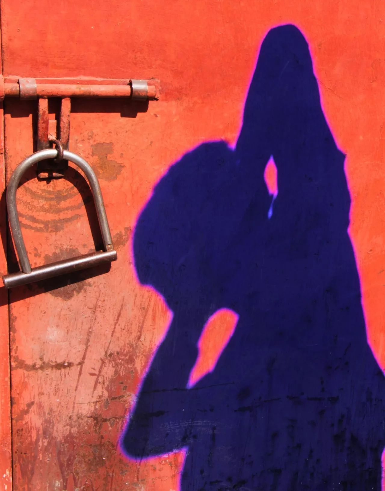
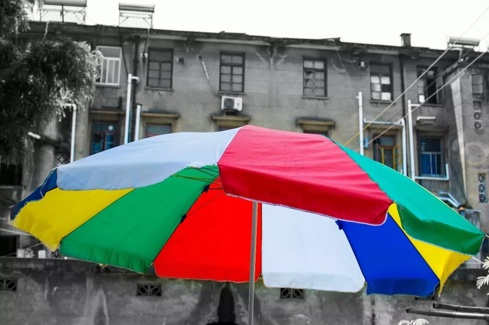

寒假的到来
上上周三，我发了次烧，而本是那时，宣告了我的寒假到来，一直到我写下这篇日记，已过去整整两周。突如其来的空闲，让我感到莫名其妙，伴随着发烧的余力，我只能一直“闲”着，就一直闲着。直到身心憔悴。
我追了不少电视剧，也看了许多电影，无聊依旧充满心头，这并不代表我没事可做，只是不想开始。可我又在想，这种简简单单看看电影，睡睡觉，到底算不算生活。从小所学，生活就该充实，就该大大小小做了许多事情，这样才有意义。
正如某人所说:
"傍晚时分，你坐在屋檐下，看着天慢慢地黑下去，心里寂寞而凄凉，感到自己的生命被剥夺了，当时我是个年轻人，但我害怕这样生活下去，衰老下去，在我看来，这是比死亡更可怕的事”
传统意义上的发呆，都是对自己生命的极其不负责。这样想，我是真的误入歧途了吗？
日子依旧在过，只是稍微变了有点不同，你日常8:00的起床，变成了10:00。你日常处理工作的电脑，变成了影视播放器。你日常的图书馆阅读，变成了寝室里的欢呼。这些其实是多么的令人激动。
在这个2017、2018的交替时光，我一直在想，何所谓生活？既然，我生来便是有思想的，那生活，我就不该过的过于马虎。人们常说：“去过自己想过的生活”，自己连自己想过什么生活，都不明确，又谈何去过？
于是，有一部分人，便选择了模仿，想着，找个自己所崇拜的偶像，然后向他学习，按照他的习惯来。当然，这无可厚非，相比较自甘堕落，无所事事，这已是值得称赞了。
但我们也要充分认识到，所选偶像往往遥不可及，或者是你并不了解他，所谓的模拟，也只是表面之谈。那到底，何所谓过了的生活？我想，便是尽可能的不去否认自己所过的日子，因为他们毕竟都真实存在过。
就如同现在，寒冷的冬天确实是到来了，但却不见得下雪。我曾经一向认为，没有雪的冬天，不算是冬天。我过的也极不情愿。但这也是过着了的，除非，我有个北方的亲戚，想过冬天，便住上半个月，否则，我别无选择。所以生活就是这样，你不过也得过。但至少在某些方面，你还是可以过得更好些的。
每想到这点，我就感觉到舒服了点。迷迷糊糊中，日子也过得快。加上被窝里的些许温暖，让我这段日子，过得很舒坦。但是心里确实不爽，应该是少了点啥！